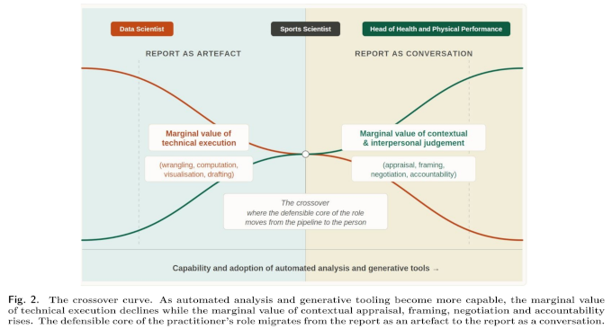

Blurry Line Between Athletes and Non-athletes
College student-athletes have a lot of the same habits that college students have. And a lot of those habits, good and bad, that come out during college years stick into adulthood.
What does change is the habits that each new generation of young adults adopt. Anyone who has been to Chapel Hill knows Franklin Street, and its bars right next to campus. The University of North Carolina student newspaper reports that the nightlife is no longer as intense, that it never bounced back after COVID chilled all social activity.
The social and personal habits of today’s college-age population is different from past generation. Scientists who know more than I do can argue the finer points, but there seem to be performance-oriented behaviors that the entire cohort, not just the athletes, have gravitated toward.
In a recent study, researchers monitored students at the University of Pittsburgh with Fitbit wearables. And they paid a subset $5 dollars for getting at least seven hours of sleep. Students slept more. Grades improved. The largest increases came to students who were paid daily. Incentives work.
The pull of Franklin Street cannot be very strong if all it takes is a couple of dollars to stay home and get some rest. Universities and students tend not to view sleep as part of their educational investment. These researchers believe that they should. If universities make it easier to sleep more, then today’s students will.
Wegmans, the grocery chain, recently started a catering program for sports teams, improving their access to healthy prepared food. Demand exists for services, not just products, that save time and lead to improved performance.
The growth of consumer wearable health and performance tracking is poised to explode. Market research estimates point to double the amount of sales for wearables in 5-6 years. Screenless tracking with a wearable like Oura or Whoop have demonstrated mainstream viability and will contribute to widespread adoption.
A wearable tracker is a habit that also offers feedback on the sum total of personal habits and behaviors. All of that data is attractive to researchers and clinicians. New form factors (like contact lenses, microneedles), materials (graphene hydrogels), collection modes (always on), and validations for different measurements (sweat) represent continuing technical progress. Wearables are also part of the gear set for workers operating in challenging environments.
Privacy and data security become larger issues as the popularity, utility and total amount of collected data increases. These habits, as we have seen, have value.
Performance habits may well become intrinsic to up-and-coming generations of consumers. When that happens the line differentiating athletes and non-athletes has less meaning, and then the relationship between population wellness and healthcare is open to redefinition.
Using AI in Research and in Writing
Two science journalists, Bruce Lewenstein and Chris Mooney, describe the current lack of science journalism. That is the lack of traditional science journalism, as read in magazines, newspapers plus their online versions. Traditional journalism has experienced structural change, and is a much smaller profession, according the two. At the same time, Substack and YouTube are thriving as science communication platforms.
Read this article and you experience science journalism. My work here is an experiment in using journalism methods to explore the larger subjects that touch on my research into athletes’ data. The process is to read as much as I can about what goes on, then write up the things that I want to read but don’t exist. As traditional journalism vanishes or lands behind paywalls, the void calls for those willing to fill it.
Writing for an audience and writing for academic publishing has mutual benefits. I can include technical details from research for my audience. I can also make my academic work readable, enjoyably so I hope.
The journalism and the research I work on have the opportunity to break new ground. The lack of precedent makes AI mostly unavailable for what I am trying to learn and write about. Still, AI has dramatically affected the research and writing workflows going on all around me.
Colleagues of mine rely heavily on AI, using large language models to draft research questions and then to code much of their technical work. They are far more productive than I am. I won’t go so far as to say that do not understand the results and conclusions in their work. One conference spot checked submissions and were disappointed to see how many authors failed to answer basic questions about their work.
Other colleagues of mine depend on AI for interpreting and editing technical articles and drafts. English is not their native language and the work becomes far easier with help from AI, and the situation is not appreciably different from the students who sacrifice learning for speed by using AI.
The more troubling aspect of AI use in research is when work becomes a prompt and then becomes text for LLM training. These are privacy violations, the modern equivalent of posting something on the Internet without permission.
The less said about AI slop and journalism the better, but it comes down the same set of issues around sacrificing quality for speed.

Sports science researcher Martin Bucheit recently wrote guidelines for where and how to use AI in the athletes’ data management and reporting pipeline. Bucheit sees valuable productivity gains early in the pipeline in terms of automating, checking, and otherwise processing the data for reporting. He emphasized the importance of personal accountability and the high stakes for accuracy as the pipeline moves into analysis and report generation, the stuff that collaborators will see.
And these are a few of the better explainer articles that I have read about AI: * Anthropic and Microsoft Researchers Weigh Limits of Artificial Intelligence at Berkman Klein Panel in The Harvard Crimson student newspaper by Francesco Palma on September 16, 2026 * The AI Inference Revolution Is Here in IEEE Spectrum by Matthew Smith on September 15, 2026 * As AI enters health care, are we ready? in CUNY SPH Press Releases and Announcements by Ariana Costakes on September 16, 2026 * An M.I.T. Report Warns A.I. Is Causing ‘Cognitive Surrender.’ Universities Are in a Bind. in The New York Times by Mark Arsenault, Dana Goldstein, Alan Blinder and Sarah Mervosh on September 15, 2026
News
Women athletes’ physical, mental health is focus of large new study in Harvard T.H. Chan School of Public Health News by Maya Brownstein on September 10, 2026
Physical literacy: unlocking its inclusive potential in schools and beyond in Frontiers in Sports and Active Living journal by Myriam Berube et al. on September 15, 2026
Preliminary evidence of a circadian rhythm effect on English premier league match outcome in Journal of Sports Analytics by Poppy Smith et al. on September 8, 2026
‘All about developing American athletes’: How passage of proposed bill would help American student-athletes in Deseret News by Doug Robinson on September 16, 2026
New US Bill Could Devestate NCAA Women’s Hockey in The Hockey News by Ian Kennedy on September 15, 2026
New Bill Restricting International Spots on College Rosters in reddit/r/MLS by TheFifthPhoenix on September 14, 2026
If the Protect College Sports Act becomes law, it could be challenged in court on several grounds in Bluesky, Sportico by Michael McCann on September 16, 2026
Science Immunology: Busy Tissues Need Bigger Cleanup Crews to Work at Their Best in Spanish National Center for Cardiovascular Research News on September 4, 2026
Protect College Sports Act nears Senate vote. Why not everyone wants it passed in USA Today Sports by John Brice and Mitchell Northam on September 14, 2026
OpEd: College football kicks off over Labor Day weekend, but players are still not employees in Minnesota Spokesman-Recorder by Michele Roberts and Ellen Staurowsky on September 3, 2026
NCAA Bill Would Fend Off Antitrust Litigation, Thwart Plaintiffs in Bloomberg Law by Katie Arcieri on September 14, 2026
Association Between Playing Surface and Anterior Cruciate Ligament (ACL) Injury Risk in the National Football League: A Systematic Review and Exploratory Meta-Analysis in Cureus journal by Vivek Vemugunta et al. on August 5, 2026
Assessing Return to Performance After Surgery in National Football League Quarterbacks: A Comparative Analysis of Performance Metrics in Cureus journal by William Gadbois et al. on August 18, 2026
Love this article. Talked to one of my friends who played on the Sol, and she says it all checks out. in Bluesky, Defector by Kate Starbird, Frankie de la Cretaz on September 16, 2026
Researchers have observed how neuronal circuits in the human brain resolve such a dilemma in real time, revealing a ‘tug of war’ between rival neuronal groups in Bluesky, Nature on September 17, 2026
Line-breaking passes have become an important metric for teams and analysts, but collection methods and definitions differ between providers. in Bluesky by Gradient Sports on September 16, 2026
Is the Player Carrying the Team or the Team Carrying the Player? in Substack, The xG Football Club by Alex Marin Felices on September 16, 2026
Wearable Sensors Accurately Track Knee Osteoarthritis Mobility in Yale School of Medicine New Research by John Ready on September 14, 2026
Why Is It So Hard to Find an NFL Quarterback? in Freakonomics Radio by Stephen Dubner on September 11, 2026
CalMatters sues UC Berkeley to force university to disclose student-athlete pay data in CalMatters by Mikhail Zinshteyn on September 14, 2026
How the ‘Skubal scope’ could change pitching injuries — and Tigers ace’s season in Richmond Times-Dispatch, USA Today Sports by Kristie Ackert on September 12, 2026